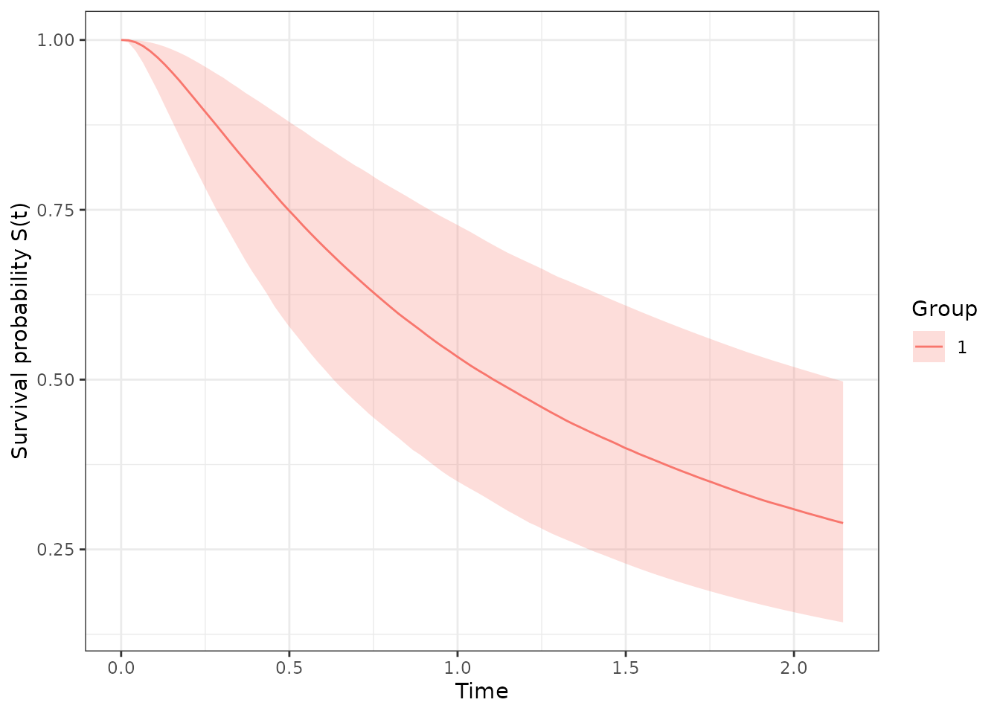

Beyond fitting, exnexSurv provides a small set of
inference and model-selection utilities that operate directly on the
posterior draws already stored in a fitted pooling_surv
object. This vignette walks through each of them using a small simulated
example.
A quick simulated example
We first generate a basket-trial dataset with
simulate_data(). By default it creates K = 9
baskets with n = 30 patients each, a single covariate, and
lets us flag some baskets as “resistant” (their location is shifted away
from the healthy population) — exactly the situation the EXNEX model is
designed to handle.
library(exnexSurv)
library(survival)
set.seed(42)
d <- simulate_data(
n = 20,
beta = 0.5,
sigma = 1.1,
outlier_baskets = c(2, 8),
resist_delta = -1.0,
censoring_rate = 0.3,
seed = 1
)
head(d)
#> time event group x1
#> 1 0.18911694 0 1 -0.3053884
#> 2 0.09337518 0 1 1.5117812
#> 3 0.76338340 0 1 0.3898432
#> 4 0.29834303 1 1 -0.6212406
#> 5 0.74983093 1 1 -2.2146999
#> 6 0.42299553 1 1 1.1249309The dataset stores the true generating parameters as attributes:
attr(d, "true_theta")
#> [1] -0.09396807 -0.97245350 -0.12534429 0.23929212 0.04942617 -0.12307026
#> [7] 0.07311436 -0.88925129 0.08636720
attr(d, "true_beta")
#> [1] 0.5
attr(d, "true_sigma")
#> [1] 1.1Now fit the model. We keep the chain short so the vignette builds quickly; for real work use more iterations and multiple chains.
fit <- pooling_surv(
Surv(time, event) ~ group + x1,
data = d,
iter = 2000,
warmup = 1000,
chains = 2,
seed = 7
)
print(fit, show_trace = FALSE)
#> <pooling_surv model>
#> Pooling: exnex
#> Draws: 2000 total post-warmup samples
#> 1000 post-warmup samples per chain
#> Groups: 9 | Covariates: 1
#> MCMC: iter = 2000 , warmup = 1000 , thin = 1 , chains = 2
#>
#> parameter mean sd q05 q50 q95 rhat
#> theta_1 0.11669485 0.3069765 -0.3559653 0.10164526 0.6594590 0.9999671
#> theta_2 -0.93329406 0.2705633 -1.3614140 -0.94103137 -0.4745091 0.9997708
#> theta_3 -0.39262307 0.3118125 -0.8972846 -0.39517207 0.1279407 0.9998223
#> theta_4 0.32611057 0.3096740 -0.1786917 0.31792317 0.8508286 1.0000792
#> theta_5 -0.06263464 0.2780822 -0.5129246 -0.07036695 0.3991122 1.0007271
#> theta_6 0.18591764 0.3207427 -0.3435120 0.18593333 0.7207398 1.0013532
#> theta_7 0.22624399 0.3367305 -0.3136029 0.22118365 0.7945553 1.0036246
#> theta_8 -0.81203876 0.2875932 -1.2800821 -0.81498863 -0.3578141 1.0004449
#> theta_9 -0.01260007 0.3443596 -0.5723189 -0.02049141 0.5682546 0.9999890
#> beta_1 0.58664689 0.1243464 0.3808375 0.58879860 0.7866019 1.0003532
#> sigma2 1.45675160 0.2336813 1.1254281 1.43078082 1.8681451 1.0014806
#> ess_bulk ess_tail
#> 985.1951 1360.9958
#> 1294.0195 1808.7330
#> 941.3412 1275.7780
#> 1052.4902 1358.4968
#> 1113.2750 1298.6132
#> 841.7601 1464.7546
#> 681.1668 1130.6408
#> 1182.8063 1608.6092
#> 679.8265 1141.9648
#> 793.1829 1221.2555
#> 460.6929 755.8611
#>
#> Convergence: max R-hat = 1 | min ESS = 460.7Survival curves
survival_curves() evaluates the posterior survival
function
on a time grid, returning a data frame with the posterior median and a
credible band:
curves <- survival_curves(fit)
#> Warning: More than one group present (1, 2, 3, 4, 5, 6, 7, 8, 9). Only the
#> first group '1' is used. Supply `newdata` with a `group` column to evaluate
#> specific groups.
head(curves)
#> time median lower upper group
#> 1 0.00000000 1.0000000 1.0000000 1.0000000 1
#> 2 0.02167666 0.9995105 0.9961272 0.9999611 1
#> 3 0.04335333 0.9966598 0.9837442 0.9995352 1
#> 4 0.06502999 0.9911528 0.9664658 0.9983715 1
#> 5 0.08670666 0.9834503 0.9459817 0.9963951 1
#> 6 0.10838332 0.9741849 0.9252277 0.9936357 1plot.survival_exnex() draws the curves (requires
ggplot2):
plot(curves)
By default a single curve is produced with covariates fixed at zero.
Passing newdata evaluates one row per subject with its own
covariate values and group:
nd <- data.frame(group = d$group[1:3], x1 = c(0, 0.2, -0.1))
curves_nd <- survival_curves(fit, newdata = nd)
table(curves_nd$group)
#>
#> 1 2 3
#> 100 100 100Posterior median survival time
For the log-normal AFT model the median survival time of a linear
predictor
is simply
.
median_survival() reports its posterior quantiles with
credible intervals:
median_survival(fit)
#> Warning: More than one group present (1, 2, 3, 4, 5, 6, 7, 8, 9). Only the
#> first group '1' is used. Supply `newdata` with a `group` column to evaluate
#> specific groups.
#> group median lower upper
#> 50% 1 1.106991 0.6315226 2.126547Restricted mean survival time (RMST)
rmst() computes
for each posterior draw and summarises the distribution:
rmst(fit, tmax = 10)
#> Warning: More than one group present (1, 2, 3, 4, 5, 6, 7, 8, 9). Only the
#> first group '1' is used. Supply `newdata` with a `group` column to evaluate
#> specific groups.
#> group rmst lower upper
#> 50% 1 2.000315 1.177118 3.416444Model comparison with WAIC
compute_waic() evaluates the pointwise log-likelihood of
the observed data (here the censoring contribution is handled
explicitly), giving WAIC, its standard error, the log pointwise
predictive density (lpd) and the penalty
p_waic:
w <- compute_waic(fit)
str(w[c("waic", "se_elpd_waic", "lpd", "p_waic", "elpd_waic")])
#> List of 5
#> $ waic : num 185
#> $ se_elpd_waic: num 7.61
#> $ lpd : num -83.2
#> $ p_waic : num 9.54
#> $ elpd_waic : num -92.7compare_waic() contrasts several fits (e.g. a full model
vs. a group-only model) and returns them ordered by ascending WAIC:
fit_group <- pooling_surv(
Surv(time, event) ~ group,
data = d,
iter = 2000, warmup = 1000, chains = 2, seed = 7
)
compare_waic(without_covariate = fit_group, with_covariate = fit)
#> model waic se_elpd_waic lpd p_waic elpd_waic
#> 1 with_covariate 185.48 7.61 -83.19976 9.538642 -92.7384
#> 2 without_covariate 208.14 6.64 -95.30619 8.762752 -104.0689Probability that one group beats another
probability_superiority() estimates
draw-by-draw for one of three summaries: median survival, survival
probability at a fixed time, or RMST.
# Median survival
probability_superiority(fit, a = 1, b = 3, function_of = "median")
#> $prob
#> [1] 0.881
#>
#> $summary
#> [1] "median"
#>
#> $groups
#> a b
#> 1 3
# Survival probability at t = 3
probability_superiority(fit, a = 1, b = 2, function_of = "survival", times = 3)
#> $prob
#> [1] 0.9955
#>
#> $summary
#> [1] "survival"
#>
#> $groups
#> a b
#> 1 2
# RMST up to t = 10
probability_superiority(fit, a = 1, b = 2, function_of = "rmst", tmax = 10)
#> $prob
#> [1] 0.9955
#>
#> $summary
#> [1] "rmst"
#>
#> $groups
#> a b
#> 1 2In this example baskets 1 and 3 are both healthy (only 2 and 8 are
resistant), so probability_superiority() comparing them has
no reason to prefer one over the other and returns a probability close
to 0.5. The exact numbers will vary with the simulated data and the MCMC
run.